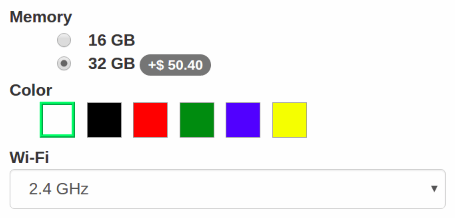
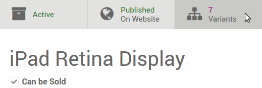
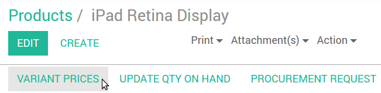
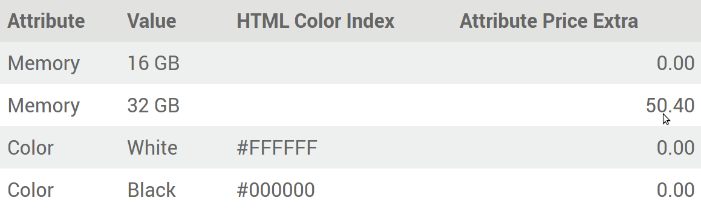
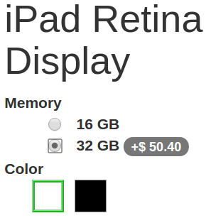
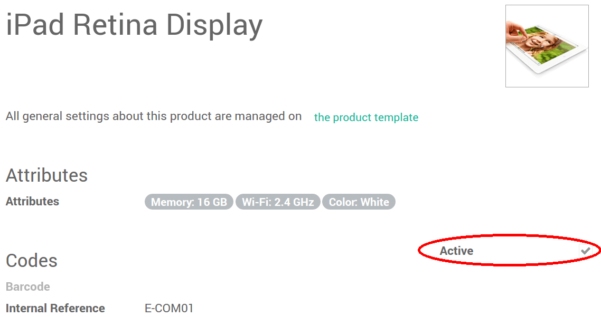
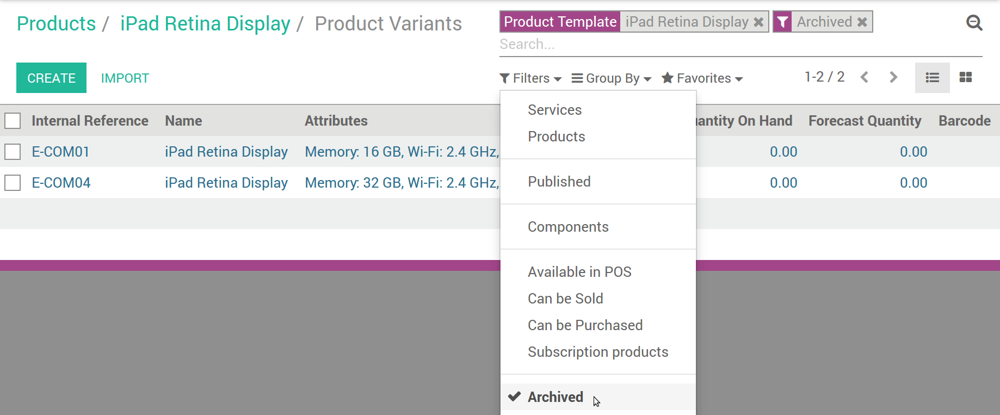

Варианты продукта используются, чтобы предложить вариации одного и того же продукта для Ваших клиентов на странице продукта. Например, клиент выбирает футболку, а затем выбирает ее размер и цвет. В приведенном ниже примере, клиент выбирает телефон, а затем выбирает память; цвет и WiFi из доступных вариантов.
Создание атрибутов и вариантов
Включите опцию Товар может иметь несколько атрибутов, которые создают варианты (например: размер, цвет,...) в
Выберите товар из списка и перейдите на вкладку Варианты.
Добавить столько атрибутов, сколько вам необходимо, выбрав для каждого один из 3 типов: радио-кнопки, выпадающее меню и выбор цвета. Вы получите несколько вариантов, как только будет 2 значения для 1 атрибута.
Как редактировать варианты
Увидеть все варианты продукта можно нажав на кнопку # вариантов
{kind=link}
Вы можете редактировать следующие данные:
Картинка (обновиться на сайте),
Штрих-код,
Внутренний артикул (SKU #),
Объем,
Вес,
Активный (доступен на сайте).
Примечание
Штрих-код и внутренний артикул специфичны для конкретного варианта. Необходимо заполнить их после создания вариантов.
Совет
Также просматривать и редактировать все варианты можно в меню . Это может быть быстрее, если вы управляете большим количеством вариантов.
Как установить конкретные цены для каждого варианта
Вы также можете установить конкретную цена за вариант с помощью кнопки Цены варианта в форме редактирования продукта (в верхнем левом углу).
Дополнительная цена будет добавлена к цене товара, если выбрано соответствующее значение атрибута.
Совет
Формулы прайс-лист позволяют установить расширенные методов расчета цен для вариантов продукта. См. Как адаптировать цены для посетителей сайта.
Как отключить/заархивировать варианты
Вы можете отключить/заархивировать конкретные варианты, и они больше не будут доступны на сайте (отсутствующие на складе, устаревшие и т. д.). Просто снимите флажок Активный в их форме.
Для извлечения заархивированных элементов, нажмите архивные в форме поиска на странице списка вариантов. Вы можете активировать их.
